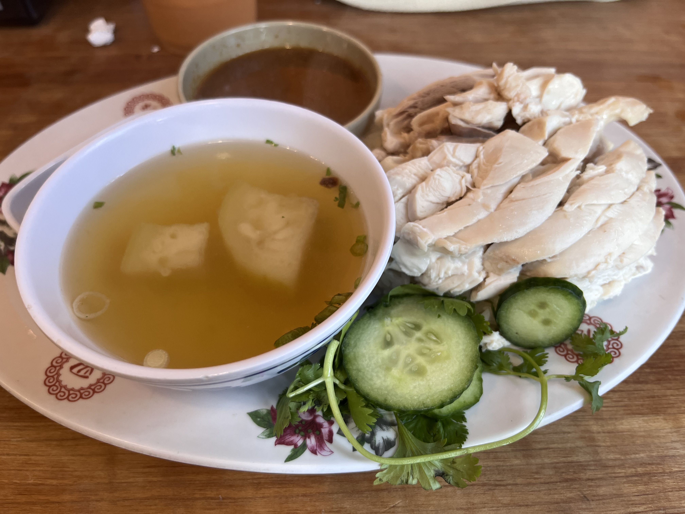
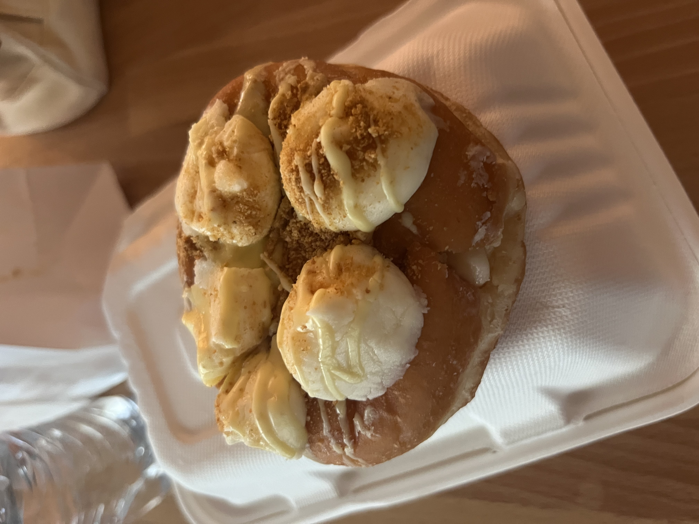
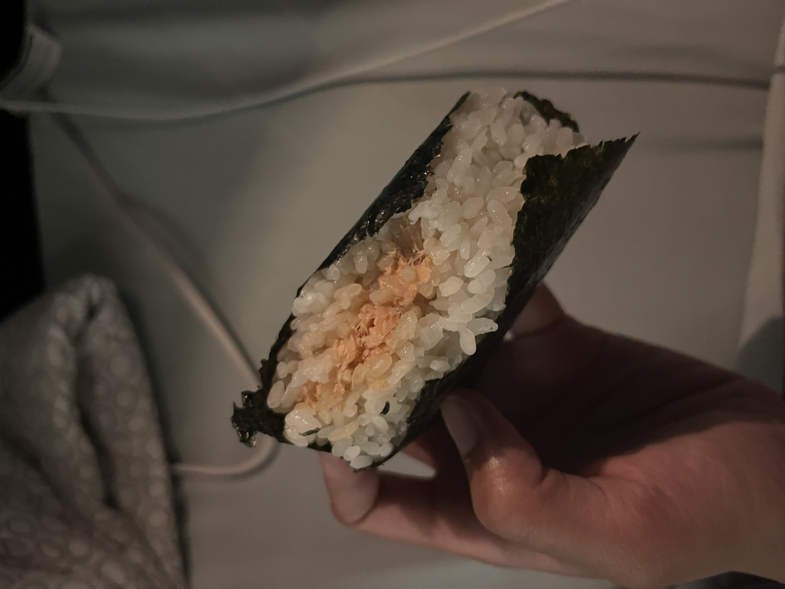
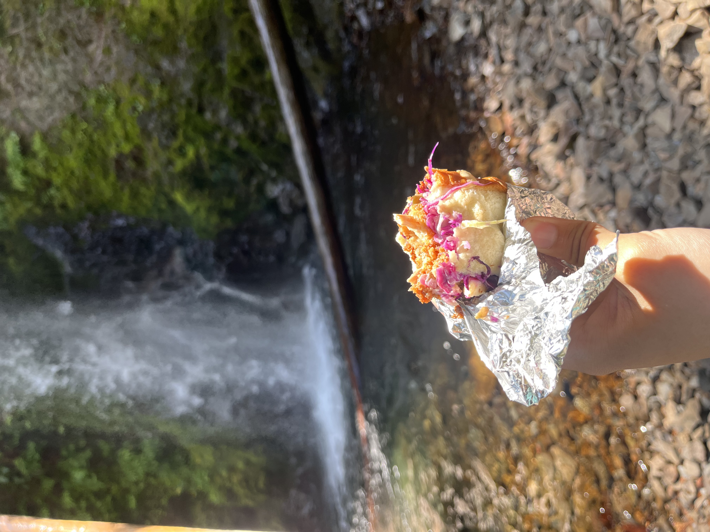

1. Nong's Khao Man Gai
Nong's Khao Man Gai serves up the best Hainanese chicken rice in Portland. The tender chicken paired with fragrant rice and their signature sauce makes this dish a must-try!
2. Voodoo's Doughnut
Voodoo Doughnut is an iconic stop in Portland, known for its unique flavors and funky atmosphere. Don't miss their famous Voodoo Doll doughnut!
3. Yokai Musubi
Yokai Musubi offers a delightful array of onigiri (rice balls) and snacks that are perfect for a quick bite. Their creative fillings will keep you coming back for more!
4. Tokyo Sando
Tokyo Sando specializes in delicious Japanese sandwiches. Each sando is made with fresh ingredients, offering a taste of Japan in the heart of Portland.